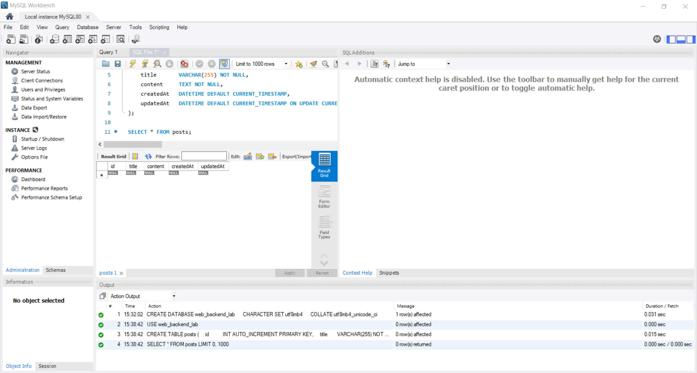
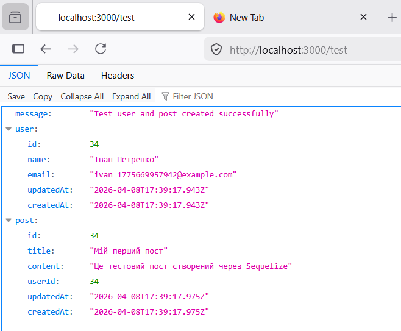

Національний технічний університет України
«Київський політехнічний інститут ім. Ігоря Сікорського»
Факультет інформатики та обчислювальної техніки
Кафедра обчислювальної техніки
на тему «Створення бази даних у MySQL. Підключення Node.js до MySQL. Робота з ORM Sequelize.»
студент ІІІ курсу ФІОТ
групи ІО-31
Бобруйко Олексій
Проскура С.Л.

Вибір предметної області. Аналіз, моделювання та розроблення адаптивного web-застосунку.
Актуальність теми
У сучасних веб-застосунках, таких як FilmHub, критично важливо мати надійний та масштабований backend для зберігання й обробки даних. Використання бази даних MySQL у поєднанні з ORM-бібліотекою Sequelize дозволяє забезпечити персистентність даних, зручну роботу зі зв’язками між таблицями та швидке виконання CRUD-операцій, що є необхідною умовою для повноцінного функціонування онлайн-каталогу фільмів.
Мета роботи
Метою лабораторної роботи було розробити серверну частину веб-застосунку FilmHub шляхом створення бази даних у MySQL, підключення Node.js до бази даних, виконання SQL-запитів через пакет mysql2, а також освоєння роботи з ORM Sequelize для створення моделей даних та реалізації зв’язку One-to-Many між ними.
Завдання роботи
- Створити базу даних, яка буде використовуватись веб-застосунком FilmHub.
- Створити таблиці у базі даних (users та posts).
- Виконати SQL-запити (SELECT, INSERT, UPDATE, DELETE) через пакет mysql2.
- Підключити Node.js до MySQL.
- Освоїти використання ORM Sequelize.
- Створити моделі User та Post.
- Реалізувати зв’язок One-to-Many між моделями.
Об’єкт роботи
Процес розробки серверної частини веб-застосунків з використанням реляційних баз даних та сучасних інструментів backend-розробки.
Предмет роботи
Підключення Node.js до MySQL, виконання SQL-запитів через пакет mysql2, використання ORM Sequelize для створення моделей даних та реалізації зв’язку One-to-Many між таблицями.
Бізнес-логіка роботи
Бізнес-логіка системи FilmHub передбачає зберігання інформації про користувачів та їхні публікації (пости). Кожен користувач може мати багато постів, а кожен пост належить лише одному користувачеві. Система повинна забезпечувати створення, читання, оновлення та видалення як користувачів, так і їхніх постів, з підтримкою цілісності даних через зв’язок One-to-Many.
Функціональні вимоги
- Підключення Node.js до бази даних MySQL через пакет mysql2.
- Виконання базових SQL-запитів (SELECT, INSERT, UPDATE, DELETE) безпосередньо з Node.js.
- Створення моделей даних User та Post за допомогою ORM Sequelize.
- Реалізація зв’язку One-to-Many між моделями User і Post.
- Підтримка повного набору CRUD-операцій над сутностями через API.
- Автоматичне створення таблиць у базі даних при запуску сервера.
Нефункціональні вимоги
- Використання асинхронного підходу (async/await) для роботи з базою даних.
- Забезпечення цілісності даних завдяки зовнішнім ключам та каскадному видаленню.
- Чітке розділення коду на конфігурацію, моделі та маршрути.
- Логування помилок підключення та виконання запитів.
- Підтримка сучасних практик розробки (Sequelize ORM замість raw SQL у бізнес-логіці).
- Кросплатформенність та можливість легкого розгортання на іншому комп’ютері.
Посилання на репозиторій GitHub
https://github.com/BobruikoOleksii-KPI/backend-2026
Скріншоти роботи
Рис. 1. Створена база даних та таблиці у MySQL Workbench
На скріншоті відображено результат створення бази даних та двох таблиць, необхідних для роботи застосунку FilmHub. Таблиця users зберігає інформацію про користувачів, а таблиця posts — про їхні публікації. Чітко видно автоматично створені Sequelize-поля (id, createdAt, updatedAt) та зовнішній ключ userId, що реалізує зв’язок One-to-Many. Це демонструє успішне застосування ORM для автоматичного створення структури бази даних.

Рис. 2. Пости з користувачами, отримані через mysql2 (ліворуч) і Sequelize (праворуч)
Даний скріншот демонструє порівняння двох підходів до отримання даних. Ліва частина показує результат виконання raw SQL-запиту через пакет mysql2 (ендпоінт /raw/posts). Права частина відображає результат того ж запиту, але виконаний через Sequelize ORM (ендпоінт /posts) з використанням методу findAll() та include: User. Обидва запити повертають однакові дані, але Sequelize автоматично підтягує пов’язану інформацію про користувача, що значно спрощує роботу з реляційними даними.

Рис. 3. Тестове створення користувача та посту
На скріншоті представлено результат виконання тестового GET-запиту /test. Під час виконання запиту автоматично створюється новий користувач і пов’язаний з ним пост, демонструючи роботу One-to-Many зв’язку. У відповіді сервер повертає повні об’єкти User і Post, включаючи всі поля та зв’язки. Цей тест наочно підтверджує коректність налаштування моделей та їх взаємодію з базою даних.

Висновок
В ході виконання лабораторної роботи було успішно реалізовано серверну частину веб-застосунку FilmHub. Було створено базу даних у MySQL, виконано підключення Node.js до бази даних через пакет mysql2, освоєно виконання SQL-запитів, а також опановано роботу з ORM-бібліотекою Sequelize. Створено моделі User та Post і реалізовано зв’язок One-to-Many між ними. Розроблено повноцінний REST API з підтримкою CRUD-операцій. Отриманий досвід дозволить ефективно інтегрувати backend з фронтендом FilmHub у подальших лабораторних роботах.